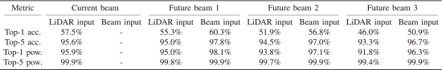

首次在真实大规模数据集中验证 LiDAR 数据用于 当前与未来 波束预测的有效性。
提出基于 GRU 的编码器-解码器网络，能够根据历史 LiDAR 感知信息预测未来多个时刻的最佳波束。
在 DeepSense 6G 场景 8 上进行实测评估，提出方法在 top-5 准确率上达到 95.6%（当前波束），未来波束预测保持 >94% 接收功率比。
相比基线方法大幅降低了波束训练开销，可实现 90%+ 的开销节省。
系统模型：
静止基站（BS）安装 16 阵列天线与 360° LiDAR；
移动用户设备（UE）为 60 GHz 全向发射器，基站使用 64 波束码本进行通信。
数据预处理：
每个采样周期收集一帧原始 LiDAR 点云（460 点）并量化为 216 角度 bin；
信道采样间隔为 128ms，数据包括 LiDAR 和 64 波束接收功率向量。
模型结构：
采用 GRU 编码器-解码器网络，支持 当前波束预测 与 未来 v 步预测；
输入：长度为 W=8 的 LiDAR 序列，输出：V+1=4 个当前及未来波束；
每一帧 LiDAR 经 FC 层降维至 64-d 向量后输入 GRU，输出经 softmax 分类器预测 beam。
当前波束预测：top-5 准确率为 95.6%；
未来第一帧预测：top-5 准确率为 95.0%，top-1 相对功率保持 >94%；
与基线比较：仅需使用 10.4% 的 beam training 开销即可达到相似精度；
模型推理速度为 1.38ms（CPU），具备实际部署可行性。

当前研究聚焦单用户场景，尚未扩展至多用户系统；
LiDAR 在极端天气（雨、雾）下性能下降，需考虑多模态增强；
模型依赖精确同步的 LiDAR 与通信数据，实际部署需进一步验证。
本项目的核心任务是基于输入的历史雷达数据（时间序列），预测未来几步的光束数据。具体地，作者使用 GRU 网络来处理雷达数据的时间依赖关系，并对未来的光束进行多类别分类预测。
数据集：
本任务使用的数据集来自deepsense 6g数据集中的场景8,通过此处下载。该数据集来自雷达传感器，包含了时间序列的激光雷达数据和对应的光束数据。数据集包括以下几种主要信息：
unit1_pwr_60ghz： 60GHz雷达单元的功率数据。
unit1_lidar_SCR： 激光雷达的 SCR 数据。
seq_index： 数据序列的索引，表示数据的时间步。
Beam 数据： 对应时间步的光束数据，通常是从雷达信号中提取的不同类别的信息。
数据处理：
数据预处理代码存放在gen_data_seq.py文件中，运行该代码会对数据集进行划分，train与test比例为8：2。
数据切分： 将数据按照时间序列切分为固定长度的输入序列（
特征选择： 选择有意义的特征（如雷达功率数据和激光雷达数据）作为输入。
标签处理： 使用最大功率索引作为光束的标签，进行多类别分类。
模型架构：
模型定义在model.py文件中，采用了一层GRU进行时序预测：
class GruModel(nn.Module): def __init__(self, num_classes, num_layers=1, hidden_size=64, embed_size=64): super(GruModel, self).__init__() self.embed = torch.nn.Linear(216, embed_size) self.num_layers = num_layers self.hidden_size = hidden_size self.gru = torch.nn.GRU(input_size=embed_size, hidden_size=hidden_size, num_layers=num_layers, dropout=0.8) self.fc = torch.nn.Linear(hidden_size, num_classes) self.name = 'GruModel' self.dropout1 = nn.Dropout(0.5)
def initHidden(self, batch_size): return torch.zeros((self.num_layers, batch_size, self.hidden_size))
def forward(self, x, h): y = self.embed(x) y = self.dropout1(y) y, h = self.gru(y, h) y = self.fc(y) return y, h训练过程：
模型的训练与评估代码均存放在train_model.py文件中，只需要运行便可得到结果，评价指标选取Top-K。
结果分析：
| Top-k Accuracy | Epoch 1 | Epoch 2 | Epoch 3 | Epoch 4 |
|---|---|---|---|---|
| Top-1 Accuracy | 58.06% | 55.86% | 52.75% | 46.15% |
| Top-2 Accuracy | 78.02% | 76.19% | 72.53% | 69.41% |
| Top-3 Accuracy | 87.73% | 85.90% | 82.60% | 79.30% |
| Top-5 Accuracy | 94.69% | 94.14% | 92.86% | 91.58% |